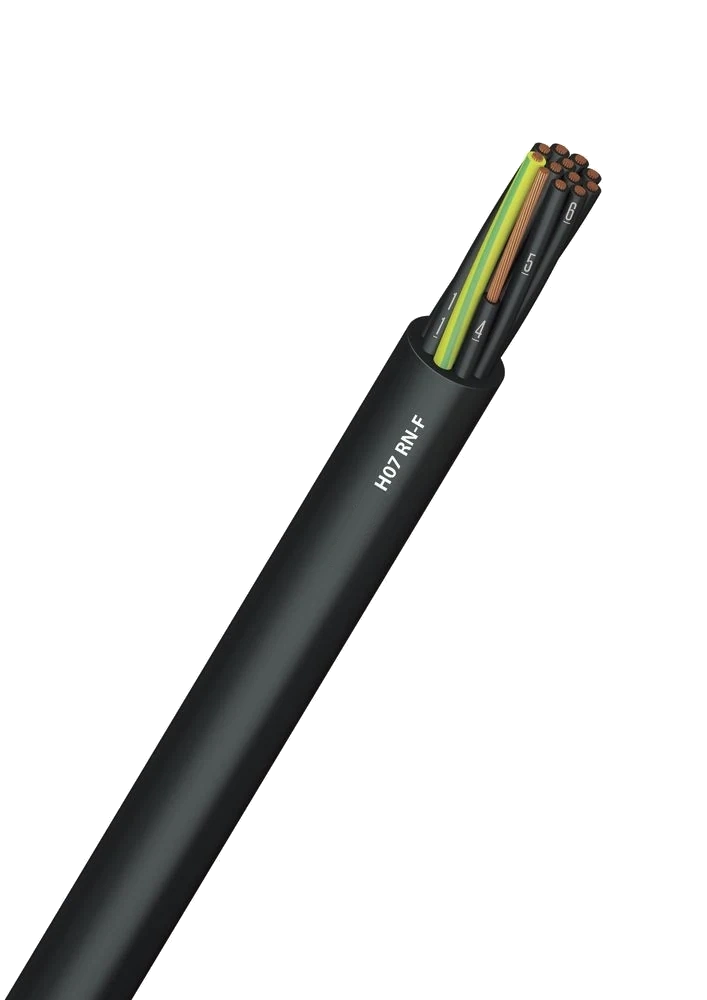
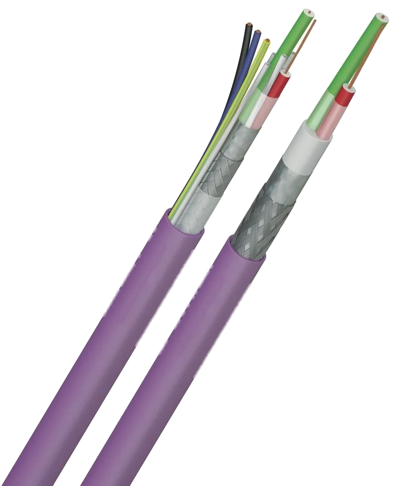
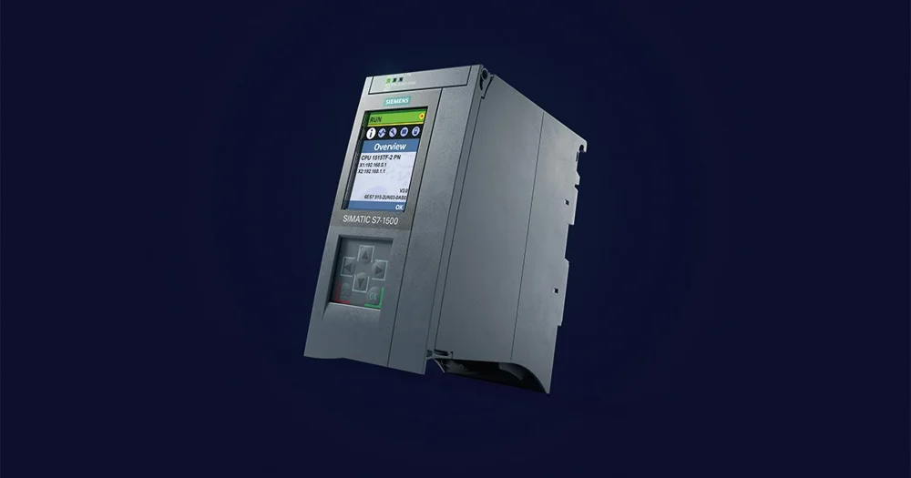
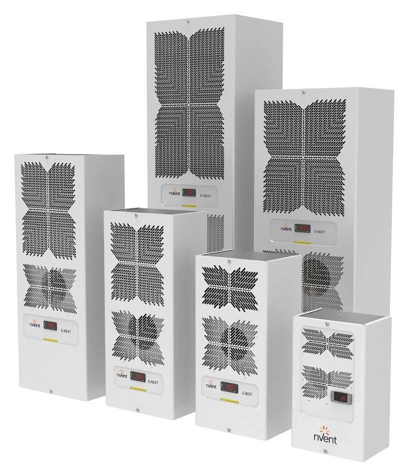

L'industrie
en mouvement.
Les composants essentiels à la continuité de vos installations. Câbles spéciaux, automatisme et solutions thermiques — un interlocuteur, une expertise industrielle.

de l'industrie
La bonne référence.
Au bon moment.
Nous accompagnons les équipes maintenance, méthodes et achats dans la recherche et l'approvisionnement de composants adaptés aux contraintes de leurs installations.
Connecter
la performance.
Puissance, commande, instrumentation et communication. Des solutions de câblage pour les environnements industriels et les applications exigeantes.
Explorer les câbles ↗
Maîtriser
chaque séquence.
Automates, variateurs, interfaces opérateur, alimentations et pièces de rechange. La bonne référence pour maintenir vos équipements en fonctionnement.
Voir l'automatisme ↗
Protéger vos
armoires électriques.
Climatisation, ventilation et refroidissement pour maîtriser la température de vos installations.
Solutions thermiques ↗
Un besoin précis ?
On s'en occupe.
Une référence, une nomenclature ou un besoin d'approvisionnement : partagez-nous votre demande.
Contacter ASE ↗